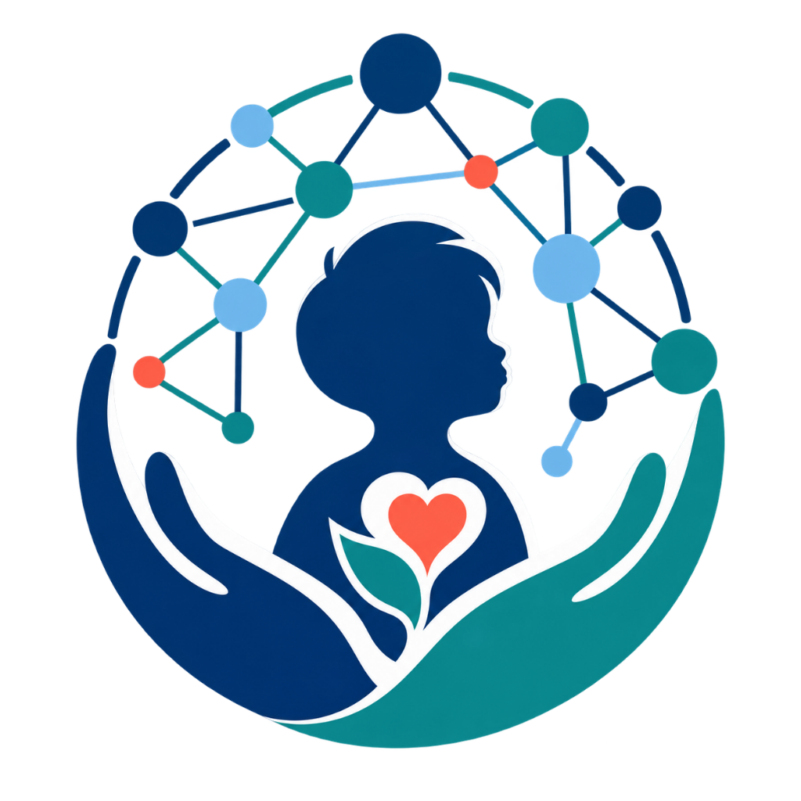

Children’s Health Data Science Team Children’s Hospital of Nanjing Medical University

Development-stage computational evidence map. Contract validation is not expert or clinical validation, and this browser must not be used for patient-level decisions.